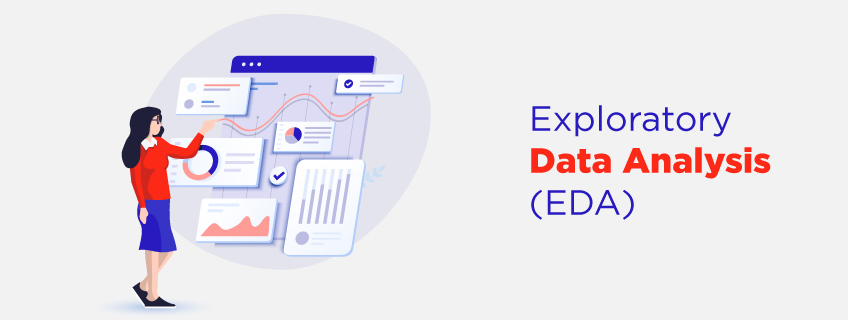

August 11, 2024
I performed exploratory data analysis (EDA) using Python. focusing on data cleaning, filtering, and visualization. Utilizing the pandas library, I cleaned the dataset by handling missing values and standardizing data formats. I then employed Seaborn and Matplotlib to create various plots, such as histograms and violin plots to visually represent trends and relationships within the data. Through this analysis, I was able to answer relevant questions and uncover insights, highlighting significant patterns and correlations.


I developed a Python-based web extraction tool utilizing Beautiful Soup and Request libraries to gather information about the largest companies in the United States by revenue from Wikipedia. Using pandas, I cleaned and organized the data into a structured DataFrame. The processed data was efficiently exported to a CSV files, facilitating further analysis.

In this project, I cleaned and organized a dataset using SQL to prepare it for analysis. I removed duplicate records, reordered columns for better readability, and standardized formats for consistency. I also changed data types to ensure they matched the content accurately and broke down complex fields into simpler components..
I imported a dataset of 1000+ car sales records and utlized advanced DAX functions and time intelligence features to derive insightful trends and interactive visualizations. My analysis included key metrics such as year-to date, month-to-date, and year-over-year sales, with a focus on company-wide sales trends and geographical sales patterns to understand performance across different regions.

I conducted an app teardown of Dualingo, assessing its functionality and user experience, I developed user personas, mapped their journeys, and identified key pain points. Based on these insights, I proposed actionable solutions, including feature enhancements, prioritizing them by impact and feasibility. Additionally, I created a growth strategy to implement the features and boost user acquisition and retention..

I developed a dashboard to analyze customer feedback and uncover insights by integrating calculated measures and interactive paramters. Key features include dynamic visualizations and custom metrics, enabling tailored analysis.
I developed an Employee Payroll System using OOP principles. This project involved creating abstract classes, concrete subclasses, and implementing inheritance. I applied encapsulation, abstraction, polymorphism, and method overriding, along with a terminal-based user interface for calculating salaries, managing records, and updating/removing employee data efficiently. .